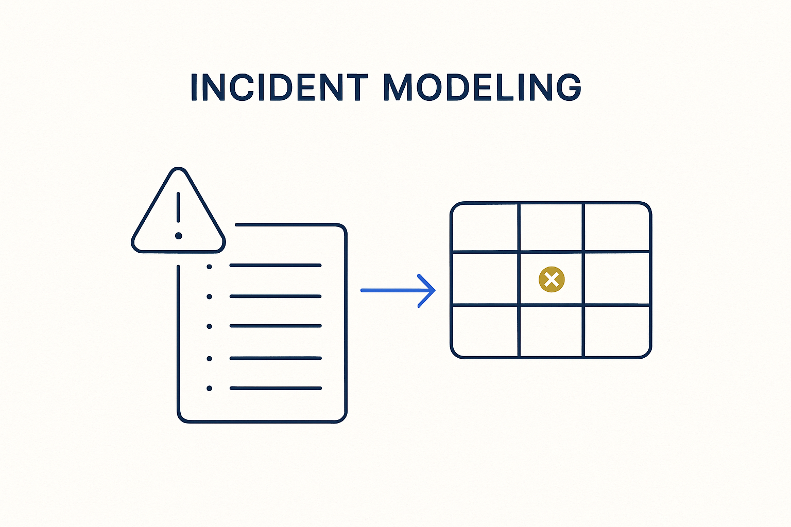

Model delivery incidents as data, not loose tickets — a late feed, a failed quality check, a broken schema becomes a tracked, owned, queryable object in the model itself.

> Model delivery incidents as data, not loose tickets — a late feed, a failed quality check, a broken schema becomes a tracked, owned, queryable object in the model itself.
When a delivery goes wrong — a feed arrives late, a quality check fails, a schema breaks, a plausibility test flags a suspicious jump — the usual response is a ticket in a disconnected system, and the knowledge evaporates once it’s closed. Incident modeling treats the incident as a first-class object in the model: what happened, on which delivery, against which contract, who owns it, what the impact was, how it was resolved. The incident is linked to the exact data flow it concerns, not filed away somewhere else.
Modeled this way, incidents stop being noise and start being signal. You can ask the platform which sources fail most, whether a pattern of lateness precedes a migration, how long resolution takes, which contracts are chronically breached. Each incident is also the raw material for improvement: the fix becomes a new rule or a tightened threshold, so the same failure is caught earlier next time.
Incident modeling closes the delivery loop: observability detects the problem, the calendar and contract define what “wrong” means, and the incident records it against an owner so accountability is real. Track incidents in the model, and the data supply chain becomes something you can manage instead of merely suffer.
Where it lives: the delivery layer of Breakthrough Modeling — failures modeled, owned and learned from.